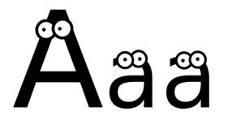
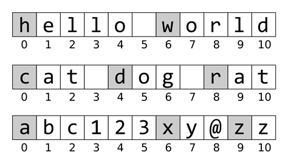

Prev - #34 Uppercase Letters | Table of Contents | Next - #36 Reverse String
getTitleCase('cat dog moose') → 'Cat Dog Moose'

In this exercise, you’ll have to convert a string to title case where every word in the string begins with an uppercase letter. The remaining letters in the word are in lowercase. Title case is a slight increase in complexity compared to Exercise #34, “Uppercase Letters”, so I advise that you solve that exercise before attempting this one.
Exercise Description
Write a getTitleCase() function with a
text parameter. The function should return the title
case form of the string: every word begins with an uppercase and the remaining
letters are lowercase. Non-letter characters separate words in the string. This
means that 'Hello World' is considered to be two
words while 'HelloWorld' is considered to be one
word. Not only spaces, but all non-letter characters can separate words, so 'Hello5World' and 'Hello@World'
also have two words.
Python’s upper() and lower() string methods return uppercase and lowercase
forms of the string, and you can use these in your implementation. You may also
use the isalpha() string method, which returns True if the string contains only uppercase or lowercase
letter characters. However, you may not use Python’s title()
string method, as that would defeat the purpose of the exercise. Similarly,
while you need to split up a string into individual words, don’t use Python’s split() string method.
These Python assert statements stop
the program if their condition is False. Copy them
to the bottom of your solution program. Your solution is correct if the following
assert statements’ conditions are all True:
assert getTitleCase('Hello, world!') == 'Hello, World!'
assert getTitleCase('HELLO') == 'Hello'
assert getTitleCase('hello') == 'Hello'
assert getTitleCase('hElLo') == 'Hello'
assert getTitleCase('') == ''
assert getTitleCase('abc123xyz') == 'Abc123Xyz'
assert getTitleCase('cat dog RAT') == 'Cat Dog Rat'
assert getTitleCase('cat,dog,RAT') == 'Cat,Dog,Rat'
import random
random.seed(42)
chars = list('abcdefghijklmnopqrstuvwxyz1234567890 ,.')
for i in range(1000):
random.shuffle(chars)
assert getTitleCase(''.join(chars)) == ''.join(chars).title()
The code in the for loop generates
random strings and checks that your getTitleCase()
function returns the same string that Python’s built-in title()
string method does. This allows us to quickly generate 1,000 test cases for
your solution.
Try to write a solution based on the information in this description. If you still have trouble solving this exercise, read the Solution Design and Special Cases and Gotchas sections for additional hints.
Prerequisite concepts: strings, for
loops, range(), len(), upper(), isalpha(), lower()
Solution Design
The main challenge in this exercise isn’t converting letters to
uppercase and lowercase but splitting the string up into individual words. We
don’t need to use Python’s split() string method or
the advanced regular expressions library. Look at the three example strings
with the first letter of each word highlighted in Figure 35-1.

Figure 35-1: Three strings with the first letter of every word highlighted.
By looking at these examples, we can figure out that what makes a
character in the string the first letter of a word is that the character is
either the first character of the string (at index 0)
or follows a non-letter character. Our title case string will have these
letters in uppercase and every other letter lowercase. Non-letter characters
remain as they are.
Our function can start with a variable named titledText
that holds the title case string form of the text
parameter as we build it. Then a for loop can loop
over all the indexes of the string. If the index is 0
(meaning it is at the start of the string) or the character at the previous
index is not a letter, add the uppercase form of the character to titledText. Otherwise, add the lowercase form of the
character to titledText.
Note that Python’s upper() and lower() string methods have no effect on strings of
non-letter characters. The expression '42!'.upper()
and '42!'.lower() both evaluate to '42!'.
By the time the for loop has finished,
titledText contains the complete title case form of
text for the function to return.
Special Cases and Gotchas
Title case not only means the first letter is in uppercase, but
all other letters must be lowercase. It’s not enough to only make the first
letter uppercase. You must also force the remaining letters to be lowercase.
Converting the string 'mcCloud' to title case
doesn’t result in 'McCloud' but rather 'Mccloud'.
There is also a boundary condition you should be aware of when
looking at the “previous index” in the for loop. You
can easily calculate the previous index from the index i
with the expression i - 1, but there’s a catch: when
i is 0, this results in -1 which refers to the last index of the string. Your code
must explicitly make sure you aren’t checking the previous index for the first
index of the string, because there is no previous index in that case.
Now try to write a solution based on the information in the previous sections. If you still have trouble solving this exercise, read the Solution Template section for additional hints.
Solution Template
Try to first write a solution from scratch. But if you have difficulty, you can use the following partial program as a starting place. Copy the following code from https://invpy.com/titlecase-template.py and paste it into your code editor. Replace the underscores with code to make a working program:
def getTitleCase(text):
# Create a titledText variable to store the titlecase text:
titledText = ____
# Loop over every index in text:
for i in range(len(____)):
# The character at the start of text should be uppercase:
if i == ____:
titledText += text[i].____()
# If the character is a letter and the previous character is
# not a letter, make it uppercase:
elif text[____].isalpha() and not text[i - ____].isalpha():
titledText += text[____].upper()
# Otherwise, make it lowercase:
else:
titledText += text[i].____()
# Return the titled cased string:
return titledText
The complete solution for this exercise is given in Appendix A and https://invpy.com/titlecase.py. You can view each step of this program as it runs under a debugger at https://invpy.com/titlecase-debug/.
Prev - #34 Uppercase Letters | Table of Contents | Next - #36 Reverse String